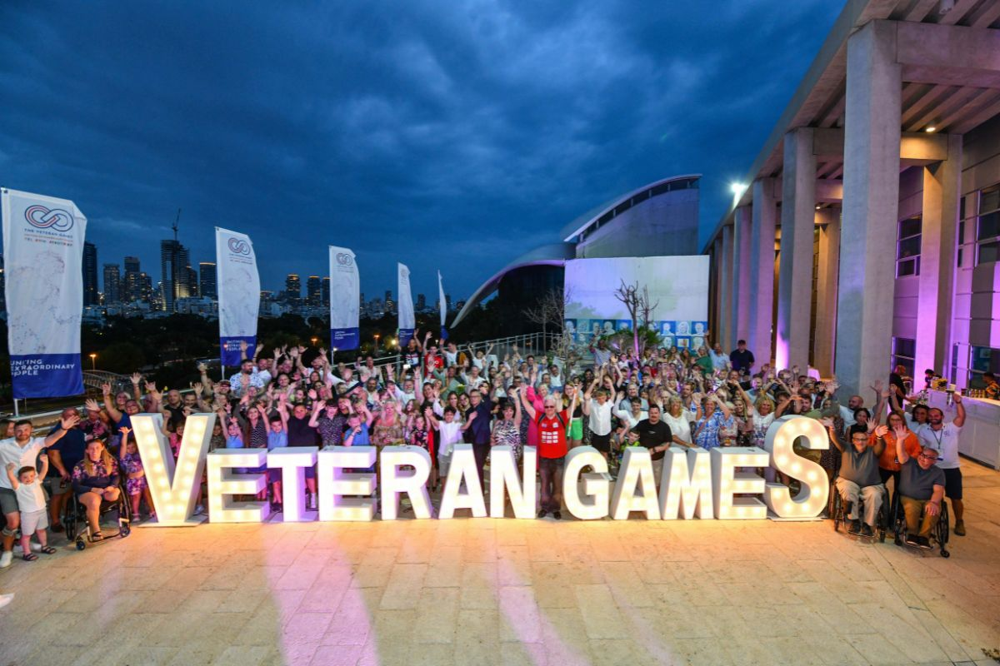
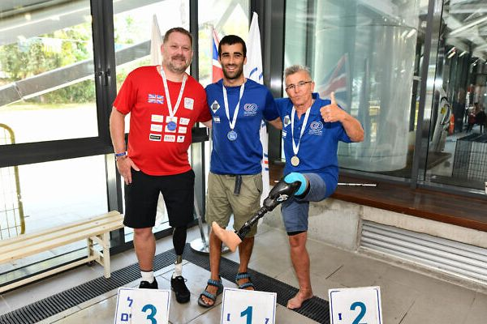
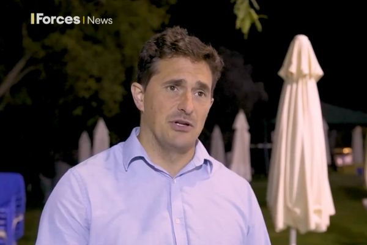

Uniting extraordinary people
Bringing together wounded, sick and injured UK veterans and their families with their overseas counterparts for five days of sporting competition, round table discussions and social and cultural activities.
Recognising the fundamental role of sport and family in supporting ongoing recovery
The Veteran Games and Conference brought together 180 wounded, sick or injured UK veterans and their families alongside their overseas counterparts. Every participant was referred by a partner UK veteran charity, and nobody had to qualify to compete.
Inclusivity and family were key to the ethos of the Games, in recognition of the role played by sport and family in supporting the ongoing recovery of veterans who have suffered physical and psychological challenges as a result of serving their country.
The Games so far
- 2018The Veteran Games and Conference is first conceived
- 2019The inaugural Games and Mental Health Conference take place in the spring
- 2022The second Games and Conference
- 2023The third Games, with 180 UK veterans and their families
In the press

Jewish News“It’s changed my life”: British and Overseas veterans compete at inspirational Veteran Games
Over 60 British veterans travelled with their families to participate in the Veteran Games.

Forces NewsJohnny Mercer praises wounded veterans competing at Veteran Games
Minister for Veterans' Affairs Johnny Mercer, an ex-Army Captain, was present at the event on the first day of competition where he presented medals to some athletes.
 The Independent
The IndependentI cage fight to relax and was a Royal Marine Commando – but this is my biggest fear
A Veteran Games featured insight into mental health and depression.
“I have hope again. I have found a new strength. You and the team made this happen. I have found my smile again.”
Our UK veteran charity partners
Participants were referred to the Games by these charities.